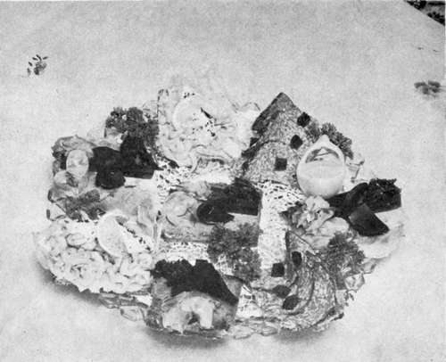

How To Make Smorrebrod (Sandwiches)
Description
This section is from the book "For Danish Appetites", by Lyla G. Solum. Also available from Amazon: For Danish Appetites.
How To Make Smorrebrod (Sandwiches)
Translated literally, Smorrebrod means bread and butter. But a Danish Smorrebrod is a long way from being plain, old-fashioned American bread and butter. To be sure, you start out with a slice of bread heavily buttered, then you pile on it anything your fancy dictates; the higher it can be piled and the more colorful it is, the more successful will it be considered. In America we call them open-face sandwiches and they deserve more recognition than they receive. A real Smorrebrod is a work of art and once you have made a plateful of them you will feel that it should be photographed; it is that beautiful. Let your imagination run wild—from baked beans and cold boiled potatoes stacked high with toppings of sliced tomatoes, pickled herring, ham, parsley, scrambled eggs or cheese. Remember that the base must be bread that has been sliced very thin and buttered heavily. Pumpernickel is used most often but white bread is good for certain kinds. Butter must be spread on very thick and not even the tiniest corner of the buttered bread may show beneath the fillings you pile on. You eat it with a knife and fork. A sliver of lettuce on one corner will add to its color and appetite appeal. Following are a few suggestions—but don't let them hamper your imagination; let them be only a springboard for your own concoctions.
Danish sandwiches, a real art in itself.
Shrimp Smorrebrod
Butter a slice of white bread and cut it into 3 triangle shaped pieces. Place a small piece of lettuce on the small corner. Use the very small Danish shrimp for this and pile them at least an inch high over the entire surface of the rest of the bread. Place a dot of mayonnaise on top and then a slice of lemon that has been sprinkled with paprika and twisted so it will stand high. Garnish the platter with sliced tomato and parsley.
Scrambled Egg Smorrebrod
Butter a slice of pumpernickel bread and cut it into 2 triangle pieces. Place a lettuce leaf on one corner. Cover the entire surface of the bread with 1/2 inch of scrambled egg. Top this with pickled herring slivers or anchovies. Split a slice of beet pickle and twist it for height-giving top. Garnish the platter with parsley and radish-roses.
Roast Beef Smorrebrod
Have the beef a little rare, so the slices will look pink against the bread and lettuce. Spread a slice of pumpernickel with butter and place a small lettuce leaf on one corner. Now lay the slice of roast beef so the entire surface of the bread is covered. Next lay on a couple of slivers of jellied consomme. Then pile high with drained cucumbers in vinegar (see under "Vegetables"). Garnish with parsley.
Leverpostej Smorrebrod
Spread pumpernickel bread with butter and cut into 2 triangle shaped pieces. Place a bit of lettuce on the corner of each triangle. Spread liverpostej about 1/4 inch thick over the entire surface of the bread, being sure not even a corner is showing. Lay a slice of Asier (see under "Pickles") across this, a sprig of parsley and top with a twist of beet pickle. Recipe for liverpostej will be found in "Meat" chapter; or use the Patte de Foie Gras that Kai Morten-sen features in his "Copenhagen Inn" restaurant in Solvang.
Cold Potato Smorrebrod
Butter a slice of pumpernickel and leave it whole. Slice cold boiled potatoes and cover the entire slice of bread with them, except for the lettuce covered corner. Spread with mayonnaise. Lay 2 sardines over this. Dot with cucumber pickles and top with a beet pickle swirl.
The variety can be as endless as your imagination: raw oysters topped with beet pickles and parsley; sardines with sliced tomatoes and green olives; lean tender steak with pickles and parsley; raw hamburger with minced onion, cucumbers in vinegar and parsley; crab meat or lobster with mayonnaise and lemon swirl; smoked fish with dill pickles and boiled egg slices; left-over fish or roast with parsley, tomatoes and beet swirl; rollepulse (see under "Meats") with beet swirl and jellied consomme.
Continue to: